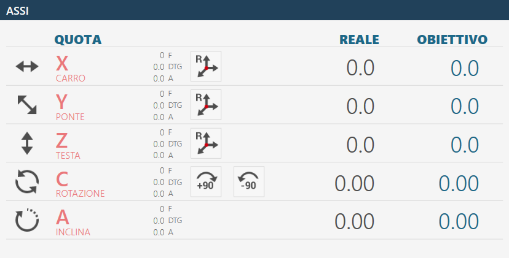
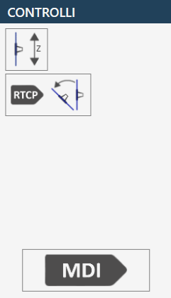
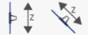
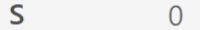

Parameters Allows to access the program parameters of Parametrix.
Parameters tool By pressing the button, you can access the page of the tool parameters. We refer to chapter 'Tool Configuration' for a detailed description of the parameters page.
Automatic rotation 0/90 degrees The 'C' axis is moved automatically to 0 or 90 degrees the instant the button is pressed.
Automatic Parking When pressed, the machine performs an automatic move of the 'X', 'Y', 'Z', 'C' axes to zero position. The movements are executed by the machine respecting the following order: (A) - Axis 'Z' in absolute zero position; (B) - Axis 'C' in position of absolute 0; (C) - Axes 'X' and 'Y' simultaneously in absolute Zero position;
WARNING!To perform automatic parking, some safety conditions must be respected:
The position of the Axis 'A' must be to 0_.Make sure the movement zone interested in the Location (See figure next) is free.
Zero Perform the axes zeroing (This operation is necessary when the machine is started or when the rectangular indicators are red). When the zeroing cycle is finished, the indicators will be grey. The phase of zeroing provides the sequential handling of the axes:
Axis Z
Axis A
Axis C
Simultaneously the X and Y axes
Axis B (Optional: Controlled lathe )
Info
NOTEThe zeroing is permitted only when the encoded key is inserted in the adequate station, identifiable on the operator console.
Turning on / Turning off internal water Pressing this button, water is activated from inside the tool. The signal above the button changes color: Green = On; Red = Off.
Turning on / Turning off external water Pressing this button activates water of the main conduit. The signal above the button changes color: Green = On; Red = Off.
Change Tool Manual Pressing the button, the tool change procedure is started.
Maintenances Pressing this button a window will be visible containing all the maintenance of the machine. There will be viewed both the maintenances to do, and those within the norm. If one maintenance is needed.
Help Pressing this button will slightly modify the graphics of all the currently visible buttons and their behavior. It is now possible to press any button with a small question mark in the top left corner to learn the function offered by the button through a small message. To exit this assistance mode, it is simply necessary to press the 'Help' button again.
In this interface are reported the values of the machine axes.
Example of interface item 'Axes' with origin 0 and axes zeroing already executed:
Example of interface element 'Axes' with origin 0 and axis zeroing still to be performed:

Below is found the explanation of the elements that compose this section of the common interface, the elements are taken as reference in the case axes already zeroed.
Real quote: indicates the position of the axis with respect to the active origin. Objective quotas: indicates the quote to set to perform the movement of the axis through the pressure of the MDI or RTCP button. F: Feed, movement speed expressed in mm/minute. DTG: Distance To Go, distance from the target. A: Ampere.
Reset Axis Pressing this button sets the zero of the active origin at the point where the relative axis (X, Y or Z) is located. The operation of resetting the axis can be performed only on origins different from the 0 (zero). To use the origin in tool coordinate (TCP) it is necessary to have set the correct measures of the tool mounted before pressing the Reset Axis button.
Automatic rotation _90 degree The position of the 'C' axis is increased by 90 degrees clockwise. Example: the machine is at 12 degrees, pressing the 'Automatic rotation _90 degrees' button the machine goes to 102 degrees: 12 _ 90.
Automatic rotation -90 degree The position of axis 'C' is decremented by 90 degrees in counter-clockwise. Example: the machine is at 102 degree, pressing the 'Automatic rotation -90 degree' button the machine is moved to 12 degree: 102 - 90.
In this panel are proposed some buttons whose behavior is explained below:


Interpolation mode When the button is active (right figure) the manual movements Z, C and A are executed considering the rotation and the inclination. Z axis movement interpolated: by activating the Z axis JOG the machine will move aligned with the tool mounted.
Info
NOTEThe tool type selected has effect on the movement direction.
Axis C movement interpolated: by running the command of axis C, in addition to the rotation, the axes X and Y will also be moved, so that the inner edge of the blade (or the tip of the tool) remains still. Axis A interpolated movement: by activating the A axes command, in addition to the inclination, the X, Y and Z axes will also be moved so that the inner edge of the blade (or the tool’s point) remains stationary in the position in which it is. Movements simultaneous of the axes Z, C and A are not allowed with the interpolated mode active.
Warning
WARNING!Pay very attention to the state of the button because the machine's movements may be different from what is expected.
RTCP interpolation Perform a positioning set to 'Objective' quote at A quote or at C quote keeping still the inner blade wire (or the tool tip). For further specifications see the paragraph: 'Semi-Automatic RTCP Rotation Tool Center Point functionality'
MDI When pressed, the machine executes the movement until the achievement of the quotes set in the objective quotes (See above). The speed of the axes X and Y is controlled by the respective potentiometers, while the other axes are controlled by the interpolated potentiometer.
Clicking on the 'Origin' field a small numeric keypad will be displayed on screen that will allow the operator to select a different origin to work with. The origin values can vary from 0 to 19 included.
The RTCP function allows the operator to make a positioning for a miter cut maintaining the tool height unchanged, despite the inclination is varied during the positioning. The internal wire of the disk will remain in the same position in which it is at the beginning of the handling.
In this section are reported some statistics regarding the motor of the machine:

Revolutions per minute (RPM) Indicates the rotations of the motor spindle per minute. If the direction of rotation is clockwise the value is positive, otherwise if the direction is anticlockwise, the sign is negative.
Intake (A) Indicate the current absorbed by the spindle motor.
Ampere threshold Indicates the threshold beyond which the alarm is activated and the spindle rotation is blocked.
The lower bar displays information and error messages and some buttons for certain functionalities. The following three examples of lower bar are proposed.
Without active alarms.
With a general emergency enabled, reported with an icon, an error code (in this case PE0000), the relative description and the alarms button on the right flashing.
With a message reported, in the example JOG direct active.
Alarms Allows the operator to access the alarms window.
Software minimization It allows the operator to exit the software page.
Machine shutdown Allows the operator to definitively shut down the machine.
The alarms page indicates the active Alarms/Messages of the system. If the machine doesn’t have active alarms the page is empty, otherwise there will be a line for each error present. In the following example page relating to management and viewing of alarms, an active alarm is visible in the system.